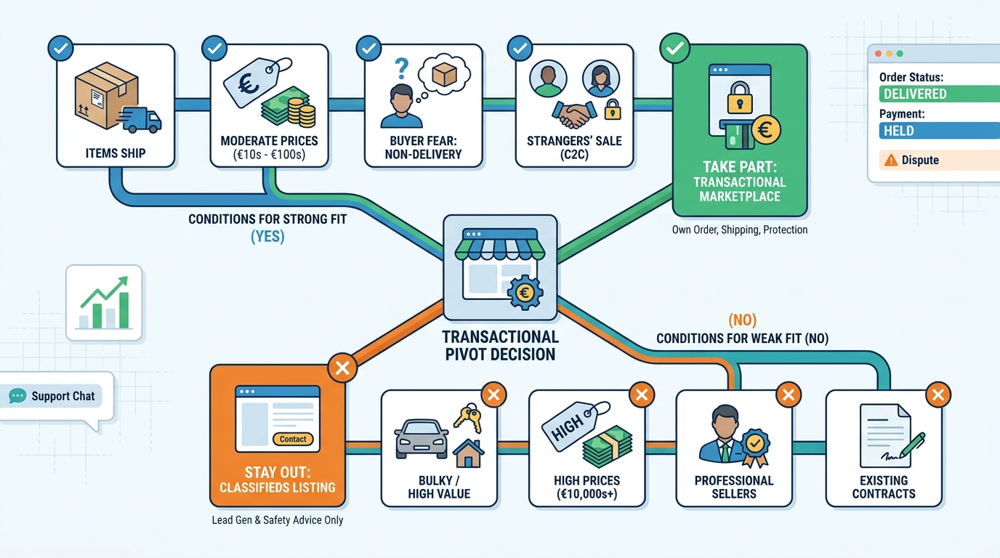

Part VI — MONEY: Conversion and Monetization
Beyond the Contact: Payments, Shipping and Buyer Protection

Image generated by Google Gemini (gemini-3-pro-image-preview)
Part VI — MONEY: Conversion and Monetization

Image generated by Google Gemini (gemini-3-pro-image-preview)